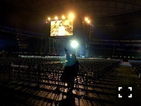

2015/0308Sun少食な自分
最近はとても
早寝早起きです！
お風呂から出て寝るまでが
とにかく早い♪
昨日は3/7、
未央奈の日でした〜♡
まさしく私が勝手に
言ってるだけの日...
でも755やブログで
皆さんが未央奈の日だね〜と
言ってくださり嬉しかったです♬
深川さんが「307！」って
言って来てくださって
凄く可愛かった！
あれ。去年もこんなブログを
更新したっけ...
そんな私は
お部屋の洋服を
冬から春仕様に変えました。
るんるん。
でも変えた途端、気候が冬に
戻って...いつ春になるんやろ(*˙0˙*)？
そうだ。3/12発売のCUTiEの
表紙がどうやら公開
されたみたいです
いつもと違う雰囲気で
撮っていただきました〜♡
私達もメイクをしてもらって
びっくりびっくり。
有難いですね。
撮影も本当に楽しかったです(｡･ω･｡)
お楽しみに！
質問返しpart2
◎未央奈は季節とかによって
メイク変えたりしますか？
もし変えたりするなら
今年の春はどんなメイクをしたい
って考えてるか教えて欲しいです
◯冬はとにかく血色メイクで
オレンジとかコーラルピンクを
よく使っていたけど春夏は
ピンクとか明るめで
パキっとした色を
つけたいな〜と♪
◎好きなスニーカー
教えてほしい
◯ニューバランス、ナイキ
リーボック、スーパースター、
コンバースかな。
今は水色、黒、紺、グレーの
スニーカーを探し中！
◎最近ニューエラのリュック
買ったんだけどみおなは
リュックも好き？
◯気になってはいるけど
持ってないなぁ...
◎オシャレのトレンドなどは
どうやって手に入れてますか？？
◯ブログを見たり雑誌を見たり！
◎堀ちゃんすごい家族と仲良しだけど
家族旅行いけたらどこいきたい？
◯イタリア！
いつか私が家族を色んな所に
連れていってあげたいです。
私の夢。
◎みおなはなかなか
眠れない時なんかはある？
あるならそんな時はどうする？
◯あります(´･_･`)
寝れるまでテレビ見たり
本を読んだり♪
羅生門みたいな話から
ジブリとかバムとケロとか
癒し系の話まで読みます！
◎男の人の髪の毛は長い方が
好きですかそれとも短髪どっち？
◯どちらかといえば短髪かな...
◎未央奈は、なぜ眉毛を見せないの、
見せた方が良いよ...
見せたらガッキーに似てるから、
見せたらガッキーに似てるから、
見せて下さい...
理由は特にないですよ。
理由は特にないですよ。
◯おでこが広いんです(T ^ T)
あと眉毛が情けない...
でも最近はよく分けていますよ♪
続く
星新一さんの小説が気になる
この頃です‼︎
寒い中、九十九里での撮影
頑張りました(T . T)
出来上がったジャケ写は
寒すぎて縮こまっていました笑
みなみも！
2人共寒がり(o_o)
"写真展"
テーマは「2月の私」
あらゆる写真とその写真に
ついてのコメントを一言書きます。
気まぐれなコーナー(｡･ω･｡)
カラフル！

西武ドーム広かったなぁ♡
ライブリハの時に
ちはるさんに撮ってもらった！
"命は美しい"の
高山さんとのシーン。
映っちゃいけないもの
ではないですよ！
顔が青白いのは寒いから...
以上
次の"写真展"のテーマは「食」です
何かしてほしいテーマがあったら
どしどし教えて下さい♪
採用しちゃうかもっ？
花粉症みなみおな♡
告知
◎Popteen発売中
◎月刊MdN発売中
◎今日0:00〜乃木坂ってどこ？
あれが放送されるかも？
私の太ってた頃
(気づいたら片想い)の
VTRにはびっくりしないで
下さいね(T . T)笑
◎3/12 CUTiE発売
みなみと生駒さんと表紙を
させていただきました。
ワンピース企画にも出ているので
良かったら見てください！
◎3/18 「命は美しい」発売
type-Cにはペアpvの
松井玲奈x堀未央奈が収録
されています♪
◎3/20 読売中高生新聞発売
よろしくお願いします。
おまけ
お弁当を選んでいる様子を
伊織に盗撮された...笑
何か喋っている私。笑
イチゴ狩り行きたいな〜♬
ではでは
おやすみおな(ヽ´ω`)
2015/03/08 21:54
コメント(725)
ブログ更新ありがとうございます!!
堀ちゃんのブログはすっごくおもしろくて見ていて楽しいです！
お仕事大変だと思うけど、頑張ってください(^^)
堀ちゃんのブログはすっごくおもしろくて見ていて楽しいです！
お仕事大変だと思うけど、頑張ってください(^^)
ブログ更新ありがとうございます!!
堀ちゃんのブログはすっごくおもしろくて見ていて楽しいです！
お仕事大変だと思うけど、頑張ってください(^^)
堀ちゃんのブログはすっごくおもしろくて見ていて楽しいです！
お仕事大変だと思うけど、頑張ってください(^^)
乃木どこ！ほりちゃんなう！かわいい、
星新一、「気まぐれロボット」がおすすめですよ！なんとなく堀さんのイメージ^^
みおなちゃん、更新ありがと~＊*( •ω• )*＊
花粉症大丈夫？？辛いよね( ´•̥̥̥ω•̥̥̥` )
お弁当選んでるのかわいい♡♡♡
ではでは。。。今週もがんばろうっっっ！！
花粉症大丈夫？？辛いよね( ´•̥̥̥ω•̥̥̥` )
お弁当選んでるのかわいい♡♡♡
ではでは。。。今週もがんばろうっっっ！！
ワキの体操ワンツースリー！
乃木どこのモノマネも脇の体操も未央奈めっちゃ面白いな
更新ありがとうーー！！
今ね、映画の「幕が上がる」見てきたんだけど、みおなにもこれだけは絶対に見てほしいと思った！！
実際に青春時代を仕事に捧げているアイドルと、映画内では高校演劇に全てを捧げる青春がリンクしてて、これをみおなが見たらどう思うのかすごく気になった！！
監督さんが好きな人だったから見に行ったんだけど、内容がすごく考えさせられたんだ！
なんか、ブログの内容と全然関係なくて申し訳ないけど、見た後これは絶対乃木坂のメンバーにも共通する映画だ！！って思ってコメントしちゃいました！笑
また更新楽しみにしてるね
今ね、映画の「幕が上がる」見てきたんだけど、みおなにもこれだけは絶対に見てほしいと思った！！
実際に青春時代を仕事に捧げているアイドルと、映画内では高校演劇に全てを捧げる青春がリンクしてて、これをみおなが見たらどう思うのかすごく気になった！！
監督さんが好きな人だったから見に行ったんだけど、内容がすごく考えさせられたんだ！
なんか、ブログの内容と全然関係なくて申し訳ないけど、見た後これは絶対乃木坂のメンバーにも共通する映画だ！！って思ってコメントしちゃいました！笑
また更新楽しみにしてるね
撮影会お疲れ様！
ワキの体操腹抱えて笑ったꉂ (๑¯ਊ¯)σ л̵ʱªʱªʱª
またどこかでやってほしいなー！笑
花粉症辛いね…
頑張って乗り切ろう( ˃ ⌑ ˂ഃ )
少食もいいけど
いっぱい食べる未央奈も好き！
けど食べ過ぎは良くないよね〜笑
あ、野菜ジュースって100%ならいいけど
普通のやつってあんまり効果ないらしいよ…？
でもおいしいよね（笑）
これからあったかくなったり寒くなったりするから体調に気をつけて！
こんばんは(^o^)/
やっと期末考査が終わりhappyな気分&4月の握手会が楽しみ‼️だけど緊張している高1男子です。(もうすぐで高2)
自分、茨城の水戸の高校に通っているのですが、未央奈さんは茨城に来たことありますか❓多分ないと思います。茨城はとても自然豊かな場所です‼️空気もきれいです‼️ちょと岐阜県に似ているかも⁉️もし、旅行に行きたいなぁ~と思ったら、是非足を運んでみて下さい‼️
4月の握手会(東京会場)がとっても楽しみ*\(^o^)/*&緊張してます(ｰｰ;)。3部と4部、2回行きます‼️自分の特徴は…眼鏡の横に銀の印があります‼️まぁ、分からないと思うけど…。もしよかったら探してみて下さい‼️
やっと期末考査が終わりhappyな気分&4月の握手会が楽しみ‼️だけど緊張している高1男子です。(もうすぐで高2)
自分、茨城の水戸の高校に通っているのですが、未央奈さんは茨城に来たことありますか❓多分ないと思います。茨城はとても自然豊かな場所です‼️空気もきれいです‼️ちょと岐阜県に似ているかも⁉️もし、旅行に行きたいなぁ~と思ったら、是非足を運んでみて下さい‼️
4月の握手会(東京会場)がとっても楽しみ*\(^o^)/*&緊張してます(ｰｰ;)。3部と4部、2回行きます‼️自分の特徴は…眼鏡の横に銀の印があります‼️まぁ、分からないと思うけど…。もしよかったら探してみて下さい‼️
大撮影会行きましたよ!ありがとう。そして
お疲れ様でした。
自分は九十九里浜の近くに住んでいるんですが
冬は相当寒いです。恐しいです。
堀ちゃんはメイクで雰囲気がガラッって変わる
モデル姿、見れたらいいなぁ
お疲れ様でした。
自分は九十九里浜の近くに住んでいるんですが
冬は相当寒いです。恐しいです。
堀ちゃんはメイクで雰囲気がガラッって変わる
モデル姿、見れたらいいなぁ
ほりっっっ！！！
可愛い過ぎやろ！！！
よだれ蛸で満足したのに！
ワキの体操は反則！！
握手会楽しみやね(￣▽￣)笑
未央奈のマスク姿可愛い過ぎる！
質問返し良かったらよろしくね！
未央奈みたいに早寝早起きしたい✨
いつも大分から応援してます！！
質問返し良かったらよろしくね！
未央奈みたいに早寝早起きしたい✨
いつも大分から応援してます！！
未央奈〜こんばんわぁ＼(^o^)／ブログ更新ありがとう＼(^o^)／今日は撮影会お疲れ様〜*\(^o^)/*未央奈は初めてのイベント楽しめたかな？*\(^o^)/*またブログで報告してねd(^_^o)今日はゆっくり休んでね*\(^o^)/*
みおな、こんばんは！
みおなの日！
俺の周りの乃木坂ファンでも
盛り上がったよ！
今日はみおなの日だね〜って！笑
古川さんもTwitterで言ってた！
あっ！
そいえば、この前Twitterで古川さんに
みおなのどうゆうところが好きなん
ですか？って質問したら、
つり目、前髪パッツンな見た目と、
クイズに負けても笑ってしまう性格に
魅力を感じました。
って帰ってきたよ！
古川さんにとってみおなは外見も内面
もどストライクやったんやね！
でも、確かにみおな可愛いし性格いいから
俺も実は推してるんよ笑
あっ！あと舌足らずなとこも好き！笑
755してても周りにみおな推しめっちゃ
いるよ！
愛されみおなやね！笑
古川さんに推される理由わかる！
では、そろそろねるね！
おやすみ〜
じゃ、また( *｀ω´)
みおなの日！
俺の周りの乃木坂ファンでも
盛り上がったよ！
今日はみおなの日だね〜って！笑
古川さんもTwitterで言ってた！
あっ！
そいえば、この前Twitterで古川さんに
みおなのどうゆうところが好きなん
ですか？って質問したら、
つり目、前髪パッツンな見た目と、
クイズに負けても笑ってしまう性格に
魅力を感じました。
って帰ってきたよ！
古川さんにとってみおなは外見も内面
もどストライクやったんやね！
でも、確かにみおな可愛いし性格いいから
俺も実は推してるんよ笑
あっ！あと舌足らずなとこも好き！笑
755してても周りにみおな推しめっちゃ
いるよ！
愛されみおなやね！笑
古川さんに推される理由わかる！
では、そろそろねるね！
おやすみ〜
じゃ、また( *｀ω´)
未央奈の日…
全然気づかなかった
全然気づかなかった
みおな~大撮影会お疲れ様(｡-_-｡)
みおなの日なんか嬉しかった（≧∇≦）
未央奈のマスク
みおなの日なんか嬉しかった（≧∇≦）
未央奈のマスク
今日、誕生日だー！＼(^^)／
ミオナの日は良い日だったようで♪
ミオナの日は良い日だったようで♪
みおなのメイクかわいい〜！
わたしも大学デビューだからメイクちゃんとできるようにならないと！！(^ω^;);););)
わたしも大学デビューだからメイクちゃんとできるようにならないと！！(^ω^;);););)
みおなブログ更新ありがとう♪
みおなの日は特に良いこともなく悪いこともなく平凡な1日でしたヽ(・∀・)ノ
乃木どこ見たよ！
よだれだこに脇の体操ワンツースリー(笑)
みおな痩せたよね！
ではではおやすみおな(^-^ゞ
撮影会お疲れ様〜！！
俺はテストとかで行けなかったけど>_<
未央奈のモバメ写真多くて好き〜笑
これからもどんどん送ってね！
俺はテストとかで行けなかったけど>_<
未央奈のモバメ写真多くて好き〜笑
これからもどんどん送ってね！
わきの体操123 わきの体操123！ 可愛い(⌒▽⌒)
みおなっち 大好き^_−☆
みおなっち 大好き^_−☆
みおな〜！初コメです！
わたしも星新一さんの本だいすきです！
特に「ブランコのむこうで」と「きまぐれロボット」はかなりおすすめです！
時間があれば読んでみてください！
わたしも星新一さんの本だいすきです！
特に「ブランコのむこうで」と「きまぐれロボット」はかなりおすすめです！
時間があれば読んでみてください！
お疲れ様です
モチモチの木なつかしーなー。笑
未央奈の不思議な感じ大好き。
モチモチの木なつかしーなー。笑
未央奈の不思議な感じ大好き。
未央奈ちゃん今日も乃木坂ってどこ？見ました。かなりありがとうございます！頑張って下さい。すいません
みおな！
花粉症つらそう(o;ω;o)
写真展のテーマは「怒」とかどうかな？
みおなのそーゆー姿見たこと無いからなぁ
花粉症つらそう(o;ω;o)
写真展のテーマは「怒」とかどうかな？
みおなのそーゆー姿見たこと無いからなぁ
未央奈に質問！
未央奈がいま飼いたいと思ってるペットはなんですか？^_^
未央奈がいま飼いたいと思ってるペットはなんですか？^_^
みおなー^ - ^
乃木ののも聴いたし
乃木どこも見たよー
最近、みおな愛が、すごすぎて
うおおぉぉーって感じ♪───Ｏ（≧∇≦）Ｏ────♪
ってことでまたコメします。by茨城のしょたぴ
乃木ののも聴いたし
乃木どこも見たよー
最近、みおな愛が、すごすぎて
うおおぉぉーって感じ♪───Ｏ（≧∇≦）Ｏ────♪
ってことでまたコメします。by茨城のしょたぴ
みおなちゃんー♡
初コメでーす
私も花粉症で大変です
どーしたら楽になりますかー？
みおなちゃんなりのやり方を教えてくださーい♪
初コメでーす
私も花粉症で大変です
どーしたら楽になりますかー？
みおなちゃんなりのやり方を教えてくださーい♪
未央奈大撮影会お疲れー！
俺は行けなかったけど楽しめたかな？
本当はいきたかったんだけどね
俺は行けなかったけど楽しめたかな？
本当はいきたかったんだけどね
千鳥のネタ最高やったwww
星新一のきまぐれロボットおすすめやよー
星新一のきまぐれロボットおすすめやよー
乃木どこ？観たよ！！
ヨダレだこも、わきの体操も面白かった！
質問！
最近のお気に入りの小説とかありますか？
みおなの日は電車とバスに酔いました。
みおなは車酔いとかする？
みおなは車酔いとかする？
乃木どこ観ました。千鳥さんのマネされてましたねぇ。
千鳥のノブ早川さんにお知らせしておきました。
多分、喜んでおられるかな？
千鳥のノブ早川さんにお知らせしておきました。
多分、喜んでおられるかな？
まさか千鳥のネタやってたとは
去年の冬にこちらでもテレビ埼玉の『いろはに千鳥』遅れて放送して、それから今一番好きな芸人になってる
去年の冬にこちらでもテレビ埼玉の『いろはに千鳥』遅れて放送して、それから今一番好きな芸人になってる
☆hello (*ov(ｴ)v)o☆
横浜～お疲れ様でした
予定が合わなく行けませんでした
( X(ｴ)<。)
楽しかったですか？
お疲れ様でした
乃木どこ？笑えました
独特で笑えました
☆bye (*ov(ｴ)v)o☆
横浜～お疲れ様でした
予定が合わなく行けませんでした
( X(ｴ)<。)
楽しかったですか？
お疲れ様でした
乃木どこ？笑えました
独特で笑えました
☆bye (*ov(ｴ)v)o☆
写真展では美味しそうなスイーツ食べてるみおなが見たいです！
未央奈チャン お疲れ様
何かを漁ってる
猫みたいで可愛い v
何かを漁ってる
猫みたいで可愛い v
乃木どこを観させて頂きました
よだれダコでぅぇす
よだれダコでぅぇす
撮影会お疲れちゃーん。
べにしょー、じゃないナイキ君は行ったみたいやね！
終わってから合流して、みんなで一旦の送別会?をやったんだ
4月からは代わりに、いやDDだから代わりにはなり得ないけども伝言役を務めさせていただきます
( ｀・∀・´)ﾉﾖﾛｼｸ
ワチャワチャ言いつつ、濃いメイクも可愛いのね！
おやすみなさい∠( ^o^)／
べにしょー、じゃないナイキ君は行ったみたいやね！
終わってから合流して、みんなで一旦の送別会?をやったんだ
4月からは代わりに、いやDDだから代わりにはなり得ないけども伝言役を務めさせていただきます
( ｀・∀・´)ﾉﾖﾛｼｸ
ワチャワチャ言いつつ、濃いメイクも可愛いのね！
おやすみなさい∠( ^o^)／
大撮影会いきたかったな！
でも全握と個握絶対いくね(´▽`)ノ
でも全握と個握絶対いくね(´▽`)ノ
顔色悪い時あるね、大丈夫？
食かぁ、春はやっぱりタケノコ！
食かぁ、春はやっぱりタケノコ！
今日もお疲れ様！大撮影会楽しかったよ〜、ありがとう！でも撮ったやつブレちゃってた(^^;
「乃木のの」聴いたよ！2人ともすごいしっかりしてて、2期生どんどん引っ張ってってほしいなって思った！あと訛り出ててめっちゃ可愛かったよ( ´ ▽ ` )笑
「バムとケロ」小学生の時めっちゃ読んでた！飛行機？で出かける話好きだった、懐かしい。。
「10匹のかえる」シリーズも読んでたなぁ…
またコメントするね！明日も頑張ろ〜！
「乃木のの」聴いたよ！2人ともすごいしっかりしてて、2期生どんどん引っ張ってってほしいなって思った！あと訛り出ててめっちゃ可愛かったよ( ´ ▽ ` )笑
「バムとケロ」小学生の時めっちゃ読んでた！飛行機？で出かける話好きだった、懐かしい。。
「10匹のかえる」シリーズも読んでたなぁ…
またコメントするね！明日も頑張ろ〜！
乃木どこ観たよ！千鳥のよだれダコの物真似やワキの体操！面白いよ。ヒムみおなコンビ結成だね！また次のネタも期待してます。
みおな〜！
撮影会お疲れ様でした^ ^
行きたかったです( ˃ ⌑ ˂ഃ )
4月に会いに行きます！^ ^
撮影会お疲れ様でした^ ^
行きたかったです( ˃ ⌑ ˂ഃ )
4月に会いに行きます！^ ^
未央奈は本当にマメにブログ更新してくれるね！
乃木ののも聴いたよ！
日奈子との真面目トーク、凄い響いたよ。
写真展のテーマか〜。俺もスニーカー好きだから良ければ未央奈のスニーカーコレクションが見てみたいな
最後に乃木どこのワキ体操最高だったよ！
おやすみおなー
乃木ののも聴いたよ！
日奈子との真面目トーク、凄い響いたよ。
写真展のテーマか〜。俺もスニーカー好きだから良ければ未央奈のスニーカーコレクションが見てみたいな
最後に乃木どこのワキ体操最高だったよ！
おやすみおなー
とーきょーぐーる全巻読んだよ！面白かった(^_^)展開もいいし！登場人物もいい
おれは755ではうみのそよかぜってやつです
おれは755ではうみのそよかぜってやつです
みおなちゃん、こんばんわ！！
毎回楽しくブログ拝見させてもらってます(｡-_-｡)
いつも、755を書いてくれるので毎日楽しいです♫
自分は沖縄に住んでいるので花粉症とは無縁なのですが、やはりキツイのでしょうか？花粉症に負けずに頑張ってください！！
CUTiE見ました！！やっぱりみおなちゃんが雑誌とかに出てるとこっちも嬉しくなりますヾ(＠⌒ー⌒＠)ノ
早起きとか大変だと思いますけど、頑張ってくださいね！
おやすみおな♪笑
毎回楽しくブログ拝見させてもらってます(｡-_-｡)
いつも、755を書いてくれるので毎日楽しいです♫
自分は沖縄に住んでいるので花粉症とは無縁なのですが、やはりキツイのでしょうか？花粉症に負けずに頑張ってください！！
CUTiE見ました！！やっぱりみおなちゃんが雑誌とかに出てるとこっちも嬉しくなりますヾ(＠⌒ー⌒＠)ノ
早起きとか大変だと思いますけど、頑張ってくださいね！
おやすみおな♪笑


堀ちゃんのブログはすっごくおもしろくて見ていて楽しいです！
お仕事大変だと思うけど、頑張ってください(^^)